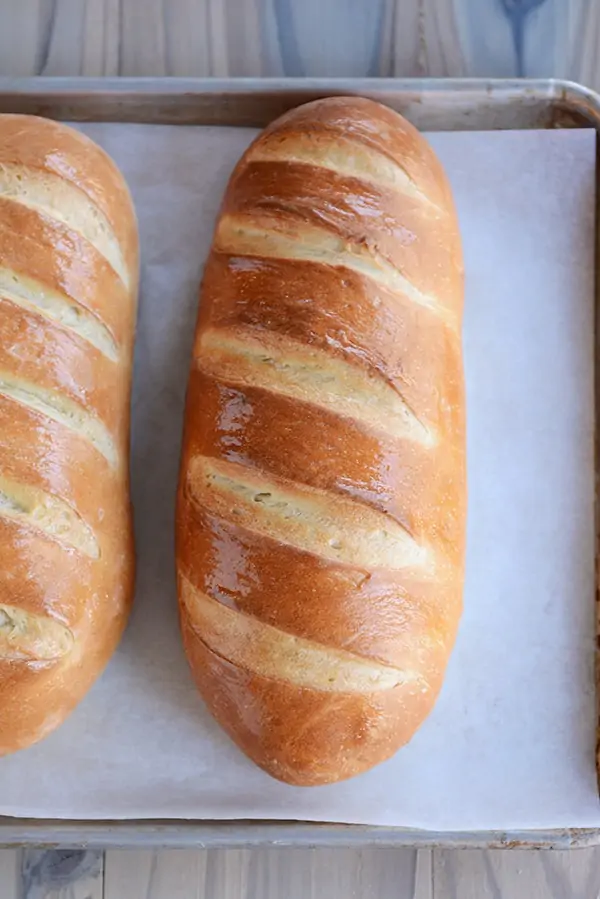

Basic Bread Recipe

Description:
Homemade bread is a timeless staple that fills your kitchen with warmth and the delightful aroma of baking. This basic bread recipe is simple and foolproof, perfect for beginners and seasoned bakers alike. The process of making bread is not only therapeutic but also incredibly rewarding, as you get to enjoy a fresh loaf that you crafted yourself. With just a few ingredients, you can create a crusty exterior and a soft, fluffy interior that pairs perfectly with butter, jams, or as a base for sandwiches.
Ingredients:
- 1 kg strong bread flour
- 625 ml tepid water
- 3 x 7 g sachets dried yeast
- 2 tablespoons sugar
- 1 level tablespoon fine sea salt
- Extra flour for dusting
Steps:
- On a clean surface, pile the flour and create a large well in the center. Pour half of the tepid water into the well, then add the yeast, sugar, and salt. Stir gently with a fork to combine.
- Gradually bring in the flour from the edges of the well until you achieve a thick, porridge-like consistency. Add the remaining water and continue mixing until the dough starts to come together.
- Flour your hands and knead the dough for about 4-5 minutes until it becomes smooth and elastic. This step is crucial for developing gluten, which gives bread its structure.
- Place the kneaded dough in a lightly floured bowl, cover it with cling film or a damp cloth, and let it prove in a warm place for about 30 minutes or until it doubles in size.
- Once risen, knock back the dough by punching it down gently to release air. Shape it into a loaf or rolls and place them on a baking tray. Allow them to prove again for another 30 minutes.
- Preheat your oven to 220°C (428°F). Bake the bread for about 25-30 minutes or until golden brown and hollow-sounding when tapped on the bottom.
- Let the bread cool on a wire rack before slicing. Enjoy your homemade bread fresh or toasted!